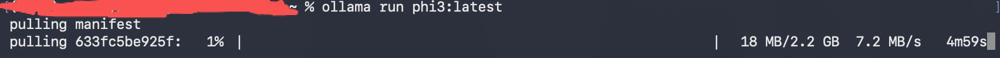

4 Ollama REST API
4.1 在 Python 中使用 Ollama API
在本文中，我们将简单介绍如何在 Python 中使用 Ollama API。无论你是想进行简单的聊天对话、使用流式响应处理大数据、还是希望在本地进行模型的创建、复制、删除等操作，本文都可以为你提供指导。此外，我们还展示了如何使用自定义客户端和异步编程来优化你的应用程序性能，无论你是 Ollama 的新手还是经验丰富的开发者，本文都能帮助你在 Python 中更高效地使用 Ollama API。
4.1.1 环境准备
在开始使用 Python 与 Ollama API 交互之前，请确保您的开发环境满足以下条件：
- Python: 安装 Python 3.8 或更高版本。
- pip: 确保已安装 pip，Python 的包管理工具。
- ollama 库: 用于更方便地与 Ollama API 交互。安装命令如下：
pip install ollama -i https://pypi.tuna.tsinghua.edu.cn/simple/4.1.2 使用方法
查看有哪些模型可以使用
ollama listNAME ID SIZE MODIFIED
qwen2.5-coder:7b dae161e27b0e 4.7 GB 21 hours ago
gpt-oss:20b-cloud 875e8e3a629a - 23 hours ago
bge-m3:latest 790764642607 1.2 GB 6 days ago
llama3.2:latest a80c4f17acd5 2.0 GB 7 days ago
qwen3-coder:480b-cloud e30e45586389 - 7 weeks ago
deepseek-v3.1:671b-cloud d3749919e45f - 7 weeks ago
gpt-oss:120b-cloud 569662207105 - 2 months ago如果没有模型，可以使用ollama pull xxx 来拉取模型，也可以用ollama run xxx 来拉取。
ollama run phi3:latest结果如下图。

使用llama3.2:1b 模型。
from ollama import chat
from ollama import ChatResponse
# :是类型注释
response: ChatResponse = chat(model='llama3.2:1b', messages=[
{
'role': 'user',
'content': '为什么天空是蓝色的？回复限定在10个字以内',
},
])
print(response['message']['content'])
print(response.message.content)4.1.3 流式响应
可以通过设置 stream=True 启用响应流，使函数调用返回一个 Python 生成器，其中每个部分都是流中的一个对象。
from ollama import chat
stream = chat(
model='llama3.2:1b',
messages=[{'role': 'user', 'content': '为什么天空是蓝色的？'}],
stream=True,
)
for chunk in stream:
print(chunk['message']['content'], end='', flush=True)简单来说是一个方法:chat
参数大致列出:model、messages、stream.
4.1.4 结构化输出
- 普通输出（Unstructured Output）
- 直接生成自然语言文本。
- 适合人类阅读，但不便于程序解析或自动化处理。
- 例如：
这是一只黑色的小猫，它正在草地上玩耍。- 结构化输出（Structured Output）
- 以 JSON 、 YAML 、 XML 或其他格式返回数据，使其更容易被机器解析和使用。
- 适合 API 、自动化工作流和数据存储。
- 例如：
{
"description": "这是一只黑色的小猫",
"activity": "正在草地上玩耍"
}4.1.4.1 结构化输出的优势
4.1.4.1.1 便于处理
- 机器可以轻松提取特定字段，如
description或activity，而无需 NLP 解析普通文本。
4.1.4.1.2 提高可控性
- 结构化格式让开发者可以精确控制模型输出，避免冗长或不可预测的回答。
- 例如，在 AI 生成代码时：
{
"language": "Python",
"code": "print('Hello, World!')"
}4.1.4.1.3 便于存储与分析
- 结构化数据更适合存储到数据库中，方便查询和分析。
- 例如：
{
"date": "2025-01-20",
"summary": "今天的销售额增长了10%。"
}from typing import Any
import json
from ollama import chat
from pydantic import BaseModel, Field, ValidationError, field_validator
# ----------------------------
# 1. 数据结构定义（稳定接口）
# ----------------------------
class CountryInfo(BaseModel):
capital: str = Field(..., alias="首都")
population: int = Field(..., alias="人口")
area_km2: float = Field(..., alias="占地面积")
model_config = {
"populate_by_name": True
}
# ---- 宽容解析：人口 ----
@field_validator("population", mode="before")
@classmethod
def normalize_population(cls, v: Any) -> int:
if isinstance(v, dict):
for key in ("value", "estimate", "2022_estimate", "2023_estimate"):
if key in v:
return int(v[key])
raise ValueError(f"无法从对象中提取人口数值: {v}")
return int(v)
# ---- 宽容解析：面积 ----
@field_validator("area_km2", mode="before")
@classmethod
def normalize_area(cls, v: Any) -> float:
if isinstance(v, dict):
for key in ("km2", "value", "total", "area"):
if key in v:
return float(v[key])
raise ValueError(f"无法从对象中提取面积数值: {v}")
return float(v)
# ----------------------------
# 2. 调用 Ollama
# ----------------------------
response = chat(
model="gpt-oss:120b-cloud",
messages=[
{
"role": "user",
"content": (
"请介绍美国的首都、人口、占地面积信息。\n"
"仅返回 JSON，字段必须是：首都、人口、占地面积。\n"
"人口和占地面积必须是数值，不要嵌套对象，不要附带来源说明。"
),
}
],
format="json",
options={"temperature": 0},
)
content = response.get("message", {}).get("content")
if not content:
raise ValueError("Ollama 返回内容为空")
# ----------------------------
# 3. JSON 解析
# ----------------------------
try:
raw_json = json.loads(content)
except json.JSONDecodeError as e:
raise ValueError(
f"Ollama 返回的内容不是合法 JSON:\n{content}"
) from e
# ----------------------------
# 4. Schema 校验 + 归一化
# ----------------------------
try:
country = CountryInfo.model_validate(raw_json)
except ValidationError as e:
raise ValueError(
f"JSON 结构不符合 CountryInfo 预期:\n{e}\n\n原始 JSON:\n{raw_json}"
) from e
# ----------------------------
# 5. 使用结果
# ----------------------------
print("====== 原始 JSON ======")
print(raw_json)
print("\n====== 结构化对象 ======")
print(country)
print("\n====== 标准化输出 ======")
print(country.model_dump())4.1.5 Coding
ollama新出现一个命令ollama launch ，执行后，它会让你在终端选择一些工具进行配置，目前有四种：
OpenCode - Open-source coding assistant
Claude Code - Anthropic’s agentic coding tool
Codex - OpenAI’s coding assistant
Droid - Factory’s AI coding agent
ollama launch 可以帮你启动这些“代码助手工具”之一。
# 启动 Claude Code 这个写代码工具， 但它别去连 Anthropic 的
# Claude 模型了， 改用我本地的 Ollama 模型。
ollama launch claude --model glm-4.7-flash
#
ollama launch claude --config4.1.6 API
Ollama Python 库提供了丰富的接口，简化了与 Ollama 的交互。这些接口设计直观，易于集成，旨在帮助开发者更便捷地调用和管理模型。如果你想了解更详细的底层实现和完整的 API 端点信息，建议参考 Ollama API 使用指南。
4.1.6.1 聊天
import ollama
ollama.chat(model='gpt-oss:20b-cloud', messages=[{'role': 'user', 'content': '为什么天空是蓝色的？'}])输出
ChatResponse(model='gpt-oss:20b-cloud', created_at='2026-01-08T06:03:12.28867162Z', done=True, done_reason='stop', total_duration=7605534897, load_duration=None, prompt_eval_count=74, prompt_eval_duration=None, eval_count=879, eval_duration=None, message=Message(role='assistant', content='天空之所以呈现蓝色，是因为太阳光在进入大气层时发生了**瑞利散射**（Rayleigh scattering）。下面用通俗的方式解释这个现象：\n\n1. **太阳光是多色光** \n 太阳光实际上是一束由不同波长（颜色）组成的白光，其中包括红、橙、黄、绿、蓝、靛、紫七种颜色。波长从短（紫光）到长（红光）递增。\n\n2. **大气分子与光的相互作用** \n 当太阳光射入地球大气层时，光与空气中的分子（如氮气、氧气）和微小颗粒相互碰撞。大气分子的尺寸（≈0.1\u202fµm）与可见光的波长（≈0.4\u202fµm–0.7\u202fµm）相近，导致光子被分子弹散成不同方向。\n\n3. **瑞利散射的波长依赖性** \n 瑞利散射强度与光波长的四次方成反比：\n \\[\n I_{\\text{scattered}} \\propto \\frac{1}{\\lambda^4}\n \\]\n 换句话说，波长越短（蓝光、紫光），被散射的比例就越大；波长越长（红光、橙光），散射比例越小。 \n 于是，蓝光在穿过大气时被散射得最多，其余颜色几乎一并沿直线路径到达地面。\n\n4. **为什么我们看到蓝天** \n - **在天空任何一个点**，散射到我们眼中的光主要是来自上空各个方向的蓝光。 \n - **天空地平面**没有“真实”物质，光只因为散射而能到达我们，因此整个天空被蓝色的散射光充满。 \n - **白天天空最亮、最蓝**，因为太阳光直接照射，散射分布均匀。\n\n5. **天空颜色的变化** \n - **日出/日落**：太阳光需穿过更长的大气路径，蓝光几乎全部被散射，剩下的长波长光（红、橙）主导，天空变红。 \n - **多尘/雾霾天气**：颗粒尺寸增大，散射更偏向红橙光，天空可能偏黄或灰。 \n - **布满云的天空**：云层也会散射光，但主要呈现白色或灰色。 \n\n**简而言之**，天空蓝是因为大气中的分子对短波长（蓝光）的散射比长波长（红光）强很多，导致我们在任何方向看到的光大多是被散射到的蓝光。 \n\n如果你想进一步探究，可以阅读宇宙物理或光学中的“瑞利散射”章节，那里有更精确的公式和实验数据。', thinking='The user asks: "为什么天空是蓝色的？" (Why is the sky blue?). They likely want a clear explanation in Chinese. We should explain Rayleigh scattering. Effective about. Perhaps mention scattering, molecular scattering, composition of sky, etc. The answer: because molecules scatter shorter wavelengths (blue) more strongly. Also mention that blue light is scattered in all directions, making sky appear blue. Additionally mention photochemistry: solar light scattering by air molecules, small particles, etc. They might want more detail: Rayleigh scattering formula and fractional scattering cross-section inversely proportional to the fourth power of wavelength. And maybe mention that near sunrise/sunset it\'s red because long path. Also mention that the sky is not always blue. Also talk about how scattering gives blue. Provide lay summary. The user likely expects a short explanation, maybe Chinese. Also must not produce disallowed content. It\'s safe. Provide answer entirely in Chinese. Let\'s answer accordingly.', images=None, tool_name=None, tool_calls=None), logprobs=None)4.1.6.2 生成
import ollama
ollama.generate(model='gpt-oss:20b-cloud', prompt='为什么天空是蓝色的？回复限定在10个字以内？')输出
GenerateResponse(model='gpt-oss:20b-cloud', created_at='2026-01-08T06:04:43.87466241Z', done=True, done_reason='stop', total_duration=2370915257, load_duration=None, prompt_eval_count=82, prompt_eval_duration=None, eval_count=272, eval_duration=None, response='散射光蓝色突出。', thinking='The user asks: "为什么天空是蓝色的？回复限定在10个字以内？" They want a response of at most 10 Chinese characters (including spaces? Usually Chinese characters count individually, but spaces maybe not). They want an answer that explains why the sky is blue in fewer than 10 Chinese characters. It\'s short. Maybe something like: "散射光蓝色突出". Count characters: "散射光蓝色突出" = let\'s count: 散(1)射(2)光(3)蓝(4)色(5)突(6)出(7). That\'s 7 characters. Under 10. Good.\n\nAlternatively: "大气散射，蓝光占优". Count: 大气散射，蓝光占优. Let\'s count: 大(1)气(2)散(3)射(4)，(punctuation maybe not counted)蓝(5)光(6)占(7)优(8). 8 characters. Under 10.\n\nThus we need to reply with 10 Chinese characters maximum. We need to be careful not to exceed. We\'ll give a concise answer: "散射光蓝色突出". That\'s 7 characters.\n\nLet\'s reply.', context=None, logprobs=None)ollama.generate 是“一次性文本生成接口”。你给它一个 prompt，它把这个 prompt 当作完整输入上下文，然后从头到尾生成一段文本。它不理解“角色”“对话轮次”“历史状态”这些概念，你如果想要多轮对话，只能自己把之前的内容拼成一个长字符串再传进去。所以它更像是一个传统的 text completion API，适合做单轮任务，比如写文章、续写、摘要、改写、代码生成等。
ollama.chat 是“对话接口”。它接受的是 messages 结构，而不是一个字符串。每条 message 都有 role（system / user / assistant）和 content。模型在内部会把这些结构当成对话历史来处理，这意味着它天然支持多轮对话、上下文连续、系统指令约束等。你不需要自己拼 prompt，模型知道哪一句是谁说的。这更接近 ChatGPT 的使用方式，适合 Agent、聊天机器人、带记忆的交互场景。
4.1.6.3 本地模型列表
ollama.list()展示所有模型
4.1.6.4 显示模型信息
ollama.show('gpt-oss:20b-cloud')输出
ShowResponse(modified_at=datetime.datetime(2026, 1, 7, 14, 51, 28, 727849, tzinfo=TzInfo(28800)), template='{{ .Prompt }}', modelfile='# Modelfile generated by "ollama show"\n# To build a new Modelfile based on this, replace FROM with:\n# FROM gpt-oss:20b-cloud\n\nFROM \nTEMPLATE {{ .Prompt }}\n', license=None, details=ModelDetails(parent_model='', format='', family='gptoss', families=['gptoss'], parameter_size='20.9B', quantization_level='MXFP4'), modelinfo={'general.architecture': 'gptoss', 'general.basename': 'gpt-oss:20b', 'gptoss.context_length': 131072, 'gptoss.embedding_length': 2880}, parameters=None, capabilities=['completion', 'tools', 'thinking'])4.1.6.5 创建模型
ollama.create(model='example', from_="gpt-oss:20b-cloud", system = "你是超级马里奥兄弟中的马里奥")ollama.create 的真实含义是，以一个已有模型为基础，在本地生成一个“带固定配置的派生模型别名”。它不训练、不微调、不联网、不下载云模型，本质上就是“基于已有模型封装一个新入口”。
使用ollama提供的远程模型创建的新模型用不了。
ollama.create 不会重新占一份模型内存，也不会复制一份权重。
4.1.6.6 复制模型
ollama.copy('llama3.1', 'user/llama3.1')ollama.copy 本质上就是改个名字，不会增加一份存储。ollama.copy 是“给这台机器贴了一个新标签”。
user/llama3.1是名字，不是文件路径。
4.1.6.7 删除模型
ollama.delete('llama3.1')4.1.6.8 拉取模型
ollama.pull('llama3.1')4.1.6.9 推送模型
ollama.push('user/llama3.1')4.1.6.10 生成嵌入
ollama.embeddings(model='bge-m3:latest', prompt='你好')这段话变成一个向量。
EmbeddingsResponse(embedding=[-0.934937596321106, 0.15120680630207062, -1.652724027633667, -0.63127601146698, -0.4281521737575531, -1.204410433769226, -0.054718829691410065, -0.6449270248413086, -0.360179603099823, 0.29594287276268005, 0.3280348777770996, 0.6836121082305908, 0.1597084254026413, -0.0376434326171875, 0.3108561336994171, -0.5079349875450134, -0.15418609976768494, -0.7474806308746338, -0.20530489087104797, -1.013852834701538, -0.7304589748382568, -0.30937767028808594, 0.10951188206672668, 0.22685357928276062, 0.49349159002304077, 0.8112816214561462, -1.2956737279891968, -0.08606769144535065, 0.8491671681404114, -0.08309851586818695,......])# 批量生成embedding
ollama.embed(model='llama3.1', input=['天空是蓝色的', '草是绿色的'])4.1.6.11 进程
ollama.ps()ollama.ps() 是用来看现在有哪些模型正在跑的。ollama.ps() 看到的是“运行实例”。
4.1.7 自定义客户端
可以通过通过 ollama 实例化 Client 或 AsyncClient 来创建自定义客户端。
可以使用以下字段创建自定义客户端：
host: 要连接的 Ollama 主机timeout: 请求超时时间
所有关键字参数参见httpx.Client.
4.1.7.1 同步客户端
使用的是同步客户端 (Client) 意味着当你调用 client.chat() 方法时，程序会等待该请求完成并返回结果后才会继续执行后续代码。这种方式更直观、简单，适合于编写流程较为线性、不需要处理大量并发任务的应用。
from ollama import Client
client = Client(
host='http://localhost:11434',
headers={'x-some-header': 'some-value'}
)
response = client.chat(model='llama3.1', messages=[
{
'role': 'user',
'content': '为什么天空是蓝色的？',
},
])
print(response)4.1.7.2 异步客户端
这段代码使用了异步客户端 (AsyncClient) ，并且定义了一个异步函数 chat() 。通过await关键字，可以暂停该函数的执行直到 AsyncClient().chat() 请求完成，但在此期间不会阻塞其他操作。这对于需要高效率处理 I/O 操作（如网络请求）或希望同时执行多个任务的应用来说非常有用。此外，使用 asyncio.run(chat()) 来运行这个异步函数。
import asyncio
from ollama import AsyncClient
import nest_asyncio
nest_asyncio.apply()
async def chat():
message = {'role': 'user', 'content': '为什么天空是蓝色的？'}
response = await AsyncClient().chat(model='llama3.1', messages=[message])
print(response)
asyncio.run(chat())设置 stream=True 修改函数以返回 Python 异步生成器：
import asyncio
from ollama import AsyncClient
import nest_asyncio
nest_asyncio.apply()
async def chat():
message = {'role': 'user', 'content': '为什么天空是蓝色的？'}
async for part in await AsyncClient().chat(model='llama3.1', messages=[message], stream=True):
print(part['message']['content'], end='', flush=True)
asyncio.run(chat())4.1.7.3 同步 & 异步客户端不同调用次数耗时对比测试
下面的这段代码分别调用同步和异步客户端重复 test_num 次问答过程，对比所需要的总时间和单次时间，用户可以更改以下的参数进行测试：
- test_messages: 测试数据
- test_num: 测试次数
- model_name: 测试模型
import time
import asyncio
from ollama import Client, AsyncClient
import nest_asyncio
# 应用nest_asyncio以支持Jupyter中的异步操作
nest_asyncio.apply()
# 初始化客户端
client = Client(host='http://localhost:11434')
async_client = AsyncClient(host='http://localhost:11434')
# 同步请求处理函数
def request_example(client, model_name, messages):
start_time = time.time()
try:
# 同步请求返回
response = client.chat(model=model_name, messages=messages)
except Exception as e:
print(f"同步请求失败: {e}")
response = None
end_time = time.time()
duration = end_time - start_time
print(f"同步请求时间: {duration}")
return response, duration
# 异步请求处理函数
async def async_request_example(client, model_name, messages):
start_time = time.time()
try:
# 异步请求返回
response = await client.chat(model=model_name, messages=messages)
except Exception as e:
print(f"异步请求失败: {e}")
response = None
end_time = time.time()
duration = end_time - start_time
print(f"异步请求时间: {duration}")
return response, duration
# 异步请求测试函数
async def async_client_test(test_num, model_name, messages):
tasks = [asyncio.create_task(async_request_example(async_client, model_name, messages))
for _ in range(test_num)]
results= await asyncio.gather(*tasks)
return results
# 运行同步测试
def sync_test(model_name, messages, test_num):
total_time = 0
for i in range(test_num):
_, duration = request_example(client, model_name, messages)
total_time += duration
return total_time / test_num
# 运行异步测试
async def async_test(model_name, messages, test_num):
start_time = time.time()
await async_client_test(test_num, model_name, messages)
end_time = time.time()
return (end_time - start_time) / test_num
# 准备测试数据
test_messages = [{'role': 'user', 'content': '为什么天空是蓝色的？'}]
test_num = 10
model_name = 'llama3.1'
# 运行同步测试并输出结果
print("运行同步测试")
sync_avg_time = sync_test(model_name, test_messages, test_num)
print(f"同步测试平均时间: {sync_avg_time:.2f} 秒")
# 运行异步测试并输出结果
print("运行异步测试")
async_avg_time = asyncio.run(async_test(model_name, test_messages, test_num))
print(f"异步测试平均时间: {async_avg_time:.2f} 秒")4.1.8 错误
如果请求返回错误状态或在流式传输时检测到错误，则会引发错误。
import ollama
model = 'does-not-yet-exist'
try:
ollama.chat(model)
except ollama.ResponseError as e:
print('错误:', e.error)
if e.status_code == 404:
ollama.pull(model)参考文档
4.2 在 JavaScript 中使用 Ollama API
本文介绍了如何在 JavaScript 中使用 Ollama API 。这篇文档旨在帮助开发者快速上手并充分利用 Ollama 的能力。你可以在 Node.js 环境中使用，也可以在浏览器中直接导入对应的模块。通过学习本文档，你可以轻松集成 Ollama 到你的项目中。
4.2.1 安装 Ollama
npm i ollama4.2.2 使用方法
import ollama from 'ollama'
const response = await ollama.chat({
model: 'kimi-k2:1t-cloud',
messages: [{ role: 'user', content: '为什么天空是蓝色的？' }],
})
console.log(response.message.content)如果本地还没有kimi-k2:1t-cloud模型，先在终端ollama run kimi-k2:1t-cloud.
输出
天空是蓝色的，主要是因为**瑞利散射（Rayleigh scattering）**。
### 简单解释：
太阳光看起来是白色的，但其实它由多种颜色的光组成（比如红、橙、黄、绿、蓝、靛、紫）。当阳光进入地球大气层时，它会遇到空气中的氮气、氧气等分子。
这些分子会把阳光**散射**到各个方向。但不同颜色的光被散射的程度不同：**波长越短的光（比如蓝色和紫色）散射得越厉害**。
虽然紫色光散射更强，但人眼对蓝色更敏感，而且太阳光中蓝色成分比紫色多，加上高层大气会吸收部分紫光，所以我们看到的天空是**蓝色**的。
---
### 一句话总结：
**因为蓝光比其他颜色更容易被空气分子散射，所以我们看到的天空是蓝色的。**
---
如果你想知道为什么日出日落时天空是红色或橙色的，我也可以继续解释。4.2.2.1 浏览器使用
要在没有 Node.js 的情况下使用此库，请导入浏览器模块。
import ollama from 'ollama/browser'4.2.3 流式响应
可以通过设置 stream: true 启用响应流，使函数调用返回一个 AsyncGenerator ，其中每个部分都是流中的一个对象。
import ollama from 'ollama'
const message = { role: 'user', content: '为什么天空是蓝色的？' }
const response = await ollama.chat({ model: 'kimi-k2:1t-cloud', messages: [message], stream: true })
for await (const part of response) {
process.stdout.write(part.message.content)
}javascrip_ollama % node javascript_ollama.js
天空是蓝色的，主要是因为**瑞利散射（Rayleigh scattering）**。
### 简单解释：
太阳光看起来是白色的，但其实它包含了**红、橙、黄、绿、蓝、靛、紫**等各种颜色的光。当阳光穿过大气层时，会被空气中的分子（主要是氮气和氧气）散射。
- **蓝光波长较短**，比红光更容易被散射。
- 所以蓝光在各个方向被“打散”，充满了整个天空，我们就看到天空是蓝色的。
---
### 再深入一点：
- 日出或日落时，太阳靠近地平线，阳光穿过更厚的大气层，蓝光被散射得更多，剩下的**红光**就主导了天空，所以看起来是**橙红色**。
- 如果没有大气层（比如月球上），天空就是黑的，即使太阳在天上。
---
一句话总结：
> **天空是蓝色的，是因为空气把阳光中的蓝光散射得最多，蓝光到处都是。**% 4.2.4 结构化输出
使用 Ollama JavaScript 库，将架构作为 JSON 对象传递给 format 参数，可以选择使用 object 格式，也可以使用 Zod （推荐）通过 zodToJsonSchema() 方法序列化架构。
先安装：
npm install zod-to-json-schema
npm install zodimport ollama from 'ollama'
import { z } from 'zod'
// 1. 定义 Zod Schema（这是唯一的“真理”）
const CountrySchema = z.object({
name: z.string(),
capital: z.string(),
languages: z.array(z.string())
})
// 2. 调用 Ollama
async function main() {
const response = await ollama.chat({
model: 'gpt-oss:120b-cloud',
messages: [
{
role: 'system',
content: 'You are a strict JSON generator. Output JSON only.'
},
{
role: 'user',
content: `
Return ONLY valid JSON using this exact structure:
{
"name": string,
"capital": string,
"languages": string[]
}
Tell me about Canada.
`.trim()
}
],
format: 'json'
})
// 3. 解析模型输出
const rawJson = JSON.parse(response.message.content)
// 4. Zod 校验（失败直接抛错）
const country = CountrySchema.parse(rawJson)
// 5. 使用结果
console.log(country)
}
// 运行
main().catch(err => {
console.error('Error:', err)
process.exit(1)
})原github代码使用的是4.xGB的模型，有点大了，换成了云模型，但是云模型跑原代码报错，模型输出不能收敛为json格式，所以做了修改。
4.2.5 创建模型
import ollama from 'ollama'
const modelfile = `
FROM llama3.1
SYSTEM "你是超级马里奥兄弟中的马里奥。"
`
await ollama.create({ model: 'example', modelfile: modelfile })4.2.6 API
Ollama JavaScript 库的 API 设计围绕 Ollama REST API 。如果你想了解更详细的底层实现和完整的 API 端点信息，建议参考 Ollama API 使用指南
4.2.6.1 聊天
ollama.chat(request)request<Object>: 包含聊天参数的请求对象。model<string>要用于聊天的模型名称。messages<Message[]>: 表示聊天历史的消息对象数组。role<string>: 消息发送者的角色（‘user’，‘system’或’assistant’）。content<string>: 消息的内容。images<Uint8Array[] | string[]>: (可选) 要包含在消息中的图像，可以是 Uint8Array 或 base64 编码的字符串。
format<string>: (可选) 设置响应的预期格式 (json)。stream<boolean>: (可选) 如果为 true，则返回AsyncGenerator。keep_alive<string | number>: (可选) 保持模型加载的时间长度。tools<Tool[]>: (可选) 模型可能调用的工具列表。options<Options>: (可选) 配置运行时的选项。
- 返回:
<ChatResponse>
4.2.6.2 生成
ollama.generate(request)request<Object>: 包含生成参数的请求对象。model<string>要用于聊天的模型名称。prompt<string>: 发送到模型的提示。suffix<string>: (可选) 后缀是插入文本后面的文本。system<string>: (可选) 覆盖模型系统提示。template<string>: (可选) 覆盖模型模板。raw<boolean>: (可选) 绕过提示模板并直接将提示传递给模型。images<Uint8Array[] | string[]>: (可选) 要包含的图像，可以是 Uint8Array 或 base64 编码的字符串。format<string>: (可选) 设置响应的预期格式 (json)。stream<boolean>: (可选) 如果为 true，则返回AsyncGenerator。keep_alive<string | number>: (可选) 保持模型加载的时间长度。options<Options>: (可选) 配置运行时的选项。
- 返回:
<GenerateResponse>
4.2.6.3 拉取模型
ollama.pull(request)request<Object>: 包含拉取参数的请求对象。model<string>要拉取的模型名称。insecure<boolean>: (可选) 从无法验证身份的服务器拉取。stream<boolean>: (可选) 如果为 true，则返回AsyncGenerator。
- 返回:
<ProgressResponse>
4.2.6.4 推送模型
ollama.push(request)request<Object>: 包含推送参数的请求对象。model<string>要推送的模型名称。insecure<boolean>: (可选) 推送到无法验证身份的服务器。stream<boolean>: (可选) 如果为 true，则返回AsyncGenerator。
- 返回:
<ProgressResponse>
4.2.6.5 创建模型
ollama.create(request)request<Object>: 包含创建参数的请求对象。model<string>要创建的模型名称。path<string>: (可选) 要创建的模型文件的路径。modelfile<string>: (可选) 要创建的模型文件的内容。stream<boolean>: (可选) 如果为 true，则返回AsyncGenerator。
- 返回:
<ProgressResponse>
4.2.6.6 删除模型
ollama.delete(request)request<Object>: 包含删除参数的请求对象。model<string>要删除的模型名称。
- 返回:
<StatusResponse>
4.2.6.7 复制模型
ollama.copy(request)request<Object>: 包含复制参数的请求对象。source<string>要从中复制的模型名称。destination<string>要复制到的模型名称。
- 返回:
<StatusResponse>
4.2.6.8 本地模型列表
ollama.list()- 返回:
<ListResponse>
4.2.6.9 显示模型信息
ollama.show(request)request<Object>: 包含显示参数的请求对象。model<string>要显示的模型名称。system<string>: (可选) 覆盖模型系统提示返回值。template<string>: (可选) 覆盖模型模板返回值。options<Options>: (可选) 配置运行时的选项。
- 返回:
<ShowResponse>
4.2.6.10 生成嵌入
ollama.embed(request)request<Object>: 包含嵌入参数的请求对象。model<string>用于生成嵌入的模型名称。input<string> | <string[]>: 用于生成嵌入的输入。truncate<boolean>: (可选) 截断输入以适应模型支持的最大上下文长度。keep_alive<string | number>: (可选) 保持模型加载的时间长度。options<Options>: (可选) 配置运行时的选项。
- 返回:
<EmbedResponse>
4.2.6.11 进程
ollama.ps()- 返回:
<ListResponse>
4.2.7 自定义客户端
可以使用以下字段创建自定义客户端：
host<string>: (可选) Ollama 主机地址。默认:"http://127.0.0.1:11434"。fetch<Object>: (可选) 用于向 Ollama 主机发出请求的 fetch 库。
import { Ollama } from 'ollama'
const ollama = new Ollama({ host: 'http://127.0.0.1:11434' })
const response = await ollama.chat({
model: 'llama3.1',
messages: [{ role: 'user', content: '为什么天空是蓝色的？' }],
})4.2.8 构建
要构建项目文件，请运行：
npm run build参考文档